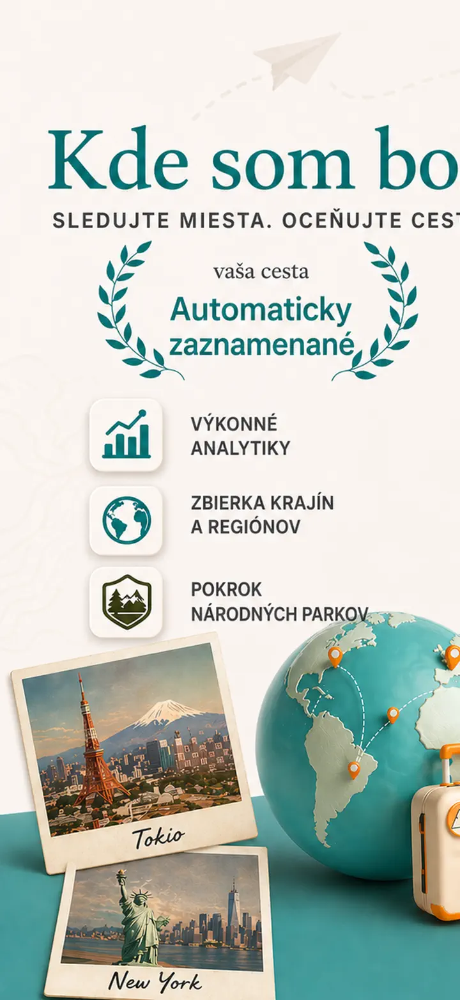
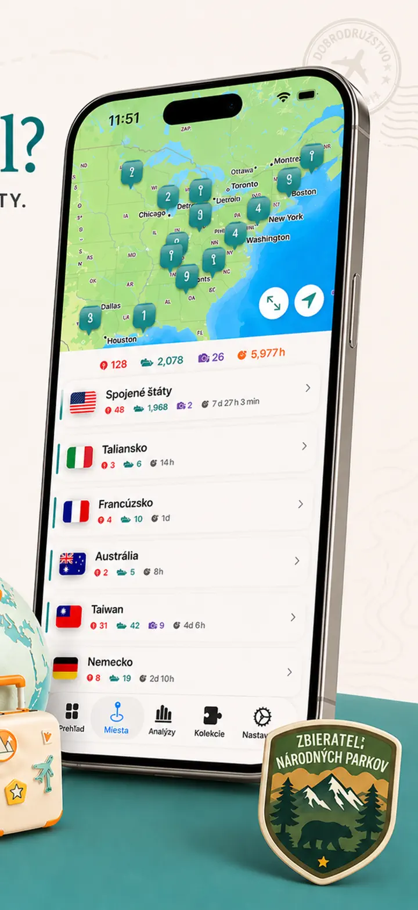
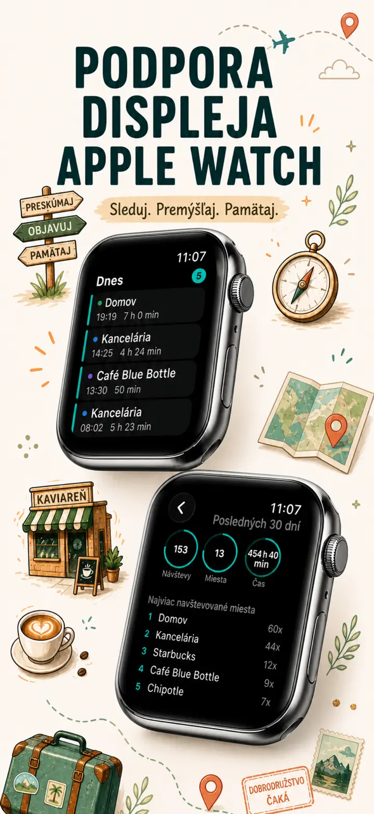
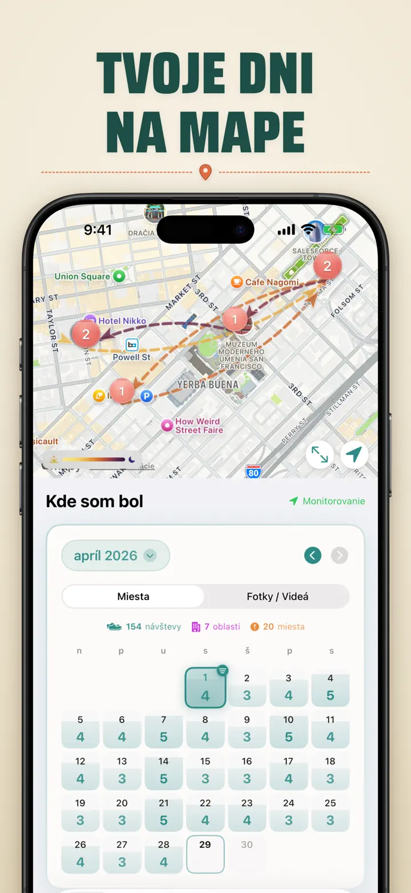
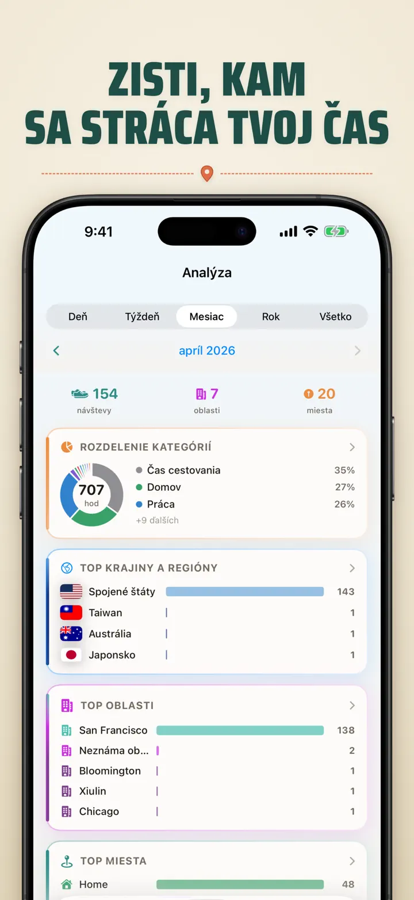
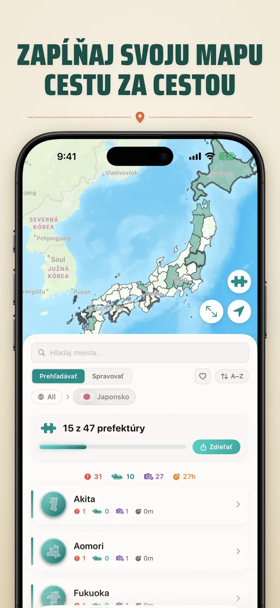
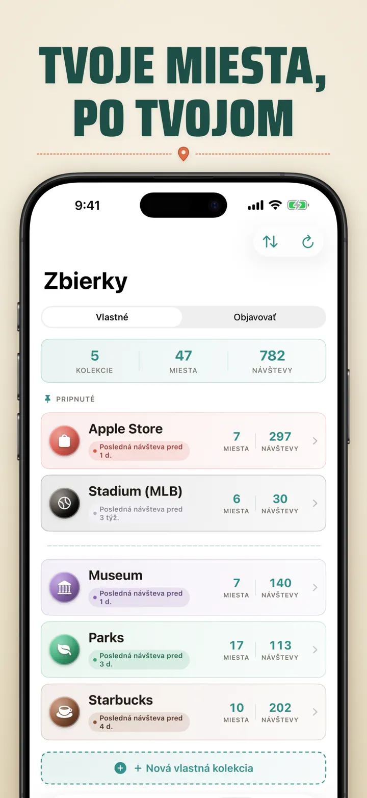
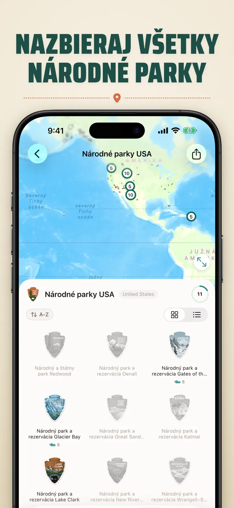
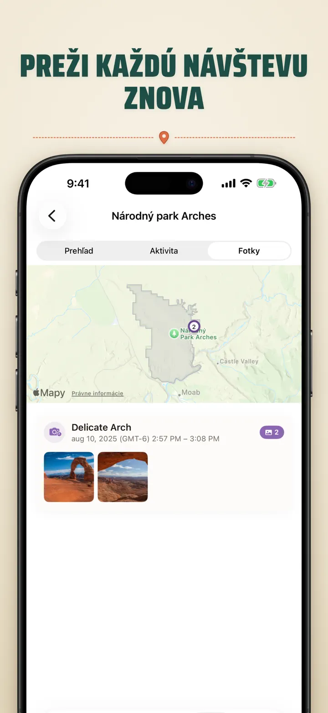

Kde som bol?
Sleduj miesta, fotky a pokrok
Novinka: 103 svätýň Ichinomiya Japonska, každá s vlastným vyrezávaným odznakom. Automatické sledovanie návštev a súkromná časová os, všetko v tvojom zariadení.
Stiahnuť v App Store
O aplikácii
Kde som bol — Tvoja osobná pamäť miest
Skúšal si si zapamätať skvelú reštauráciu z minulého mesiaca? Alebo koľko času tráviš v práci oproti domovu? Kde som bol automaticky sleduje tvoje návštevy a vytvára krásnu časovú os tvojej cesty.
AUTOMATICKÉ SLEDOVANIE
Žiadne ručné zapisovanie. Aplikácia ticho zaznamenáva príchody a odchody, vytvára podrobnú históriu návštev bez akéhokoľvek úsilia.
INTELIGENTNÝ POHĽAD V KALENDÁRI
Prezeraj si návštevy podľa dní, týždňov alebo mesiacov. Intuitívny kalendár zobrazuje počty návštev a miesta na prvý pohľad. Klepnutím na ľubovoľný deň zistíš, kde si bol.
WIDGETY PLOCHY A ZAMKNUTEJ OBRAZOVKY
Posledné návštevy uvidíš na prvý pohľad cez stredný widget plochy. Widgety zamknutej obrazovky ukazujú aktuálnu polohu, časovač pobytu alebo dnešný počet návštev — všetky sa klepnutím otvoria.
USPORIADANÉ MIESTA
Miesta sú automaticky zoskupené podľa regiónu a mesta. Priraď kategórie ako Dom, Práca, Posilňovňa alebo Kaviareň. Vytváraj vlastné kategórie s ikonami a farbami.
VÝKONNÁ ANALYTIKA
Odhaľ vzory vo svojom živote:
- Rozloženie času naprieč kategóriami
- Tvoje najnavštevovanejšie miesta
- Analýza týždenného rytmu
- Trendy frekvencie návštev
- Graf dĺžky pobytu pre každé miesto — podľa dňa, týždňa, mesiaca alebo roka
ZBIERKA KRAJOV A REGIÓNOV
Premeň cestovanie na puzzle! Sleduj, koľko regiónov si navštívil v každej krajine. Zdieľaj pokrok ako obrázok puzzle s priateľmi a rodinou.
POKROK V NÁRODNÝCH PARKOCH
Preskúmaj prírodu! Automaticky zaznamenávaj návštevy národných parkov a sleduj svoj pokrok popri každodenných miestach.
100 SLÁVNYCH JAPONSKÝCH HRADOV
Cestuješ po Japonsku? Nová zabudovaná zbierka sleduje tvoje návštevy 100 slávnych hradov krajiny. Otvor Zbierky → Objaviť → Japonsko.
VLASTNÉ ZBIERKY
Sleduj čokoľvek — Apple Stores, múzeá, pivovary. Vytvor zbierku, nastav kľúčové slová a sleduj, ako sa sama napĺňa. Miesta môžeš ručne pridať alebo odobrať. Každá zbierka ukazuje počet, históriu a mapu.
IMPORTUJ SVOJU HISTÓRIU POLOHY
Prichádzaš z inej aplikácie? Vezmi si so sebou celú svoju históriu — formát sa rozpozná automaticky, veľké exporty zvládneme a pred importom uvidíš náhľad:
- Google Timeline (export z Google Maps alebo Google Takeout)
- Arc Timeline (mesačné súbory .json, ktoré exportuješ z Arc)
- Moves (záloha ProtoGeo / Facebook Moves)
HROMADNÁ SPRÁVA
Spravuj všetky svoje miesta na jednom mieste. Vyhľadávaj, zoraďuj a filtruj. Vyber viac miest a hromadne ich kategorizuj alebo vymaž. Udržuj svoju knižnicu miest prehľadnú a usporiadanú.
SÚKROMIE NA PRVOM MIESTE
Tvoje polohové údaje zostávajú v zariadení. Žiadny účet nie je potrebný. Žiadne dáta sa neposielajú na servery. Tvoje pohyby sú tvoja vec.
IDEÁLNE PRE:
- Sledovanie pracovného času a miest
- Pamätanie reštaurácií a obchodov
- Analýzu každodennej rutiny
- Cestovný denník a záznam návštev parkov
- Výkazy výdavkov a kilometrov
FUNKCIE:
- Automatická detekcia príchodu a odchodu
- Pohľad v kalendári s časovou osou návštev
- Widgety plochy a zamknutej obrazovky s odkazmi do aplikácie
- Zoskupenie miest podľa regiónu a mesta
- Vlastné kategórie s ikonami a farbami
- Inteligentné návrhy kategórií z Apple Maps
- Podrobná história návštev s trvaním
- Graf dĺžky pobytu pre miesta (deň / týždeň / mesiac / rok)
- Analytický prehľad s poznatkami
- Vyhľadávanie a filtrovanie miest
- Zbierka krajov so zdieľateľným obrázkom puzzle
- Sledovanie pokroku v národných parkoch
- Zabudovaná zbierka 100 slávnych japonských hradov
- Vlastné zbierky s automatickým párovaním podľa kľúčových slov, ručnou úpravou a štatistikami
- Hromadná správa miest
- Import z Google Timeline, Arc Timeline a Moves
- Možnosti exportu
- Bez potreby účtu
- Dizajn s dôrazom na súkromie
Začni budovať svoju pamäť miest ešte dnes. Stiahni Kde som bol a nikdy nezabudni, kde si bol.
Privacy Policy: https://masawata.net/privacy-policy.html Terms Of Service: https://www.apple.com/legal/internet-services/itunes/dev/stdeula/
Snímky obrazovky








Kde som bol?
Novinka: 103 svätýň Ichinomiya Japonska, každá s vlastným vyrezávaným odznakom. Automatické sledovanie návštev a súkromná časová os, všetko v tvojom zariadení.
Stiahnuť v App Store